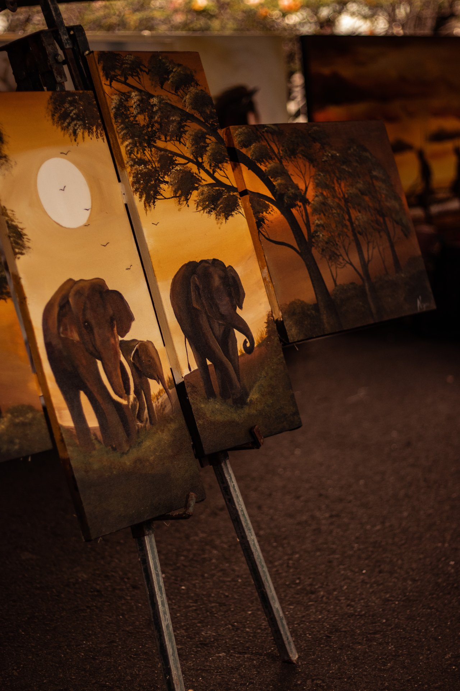
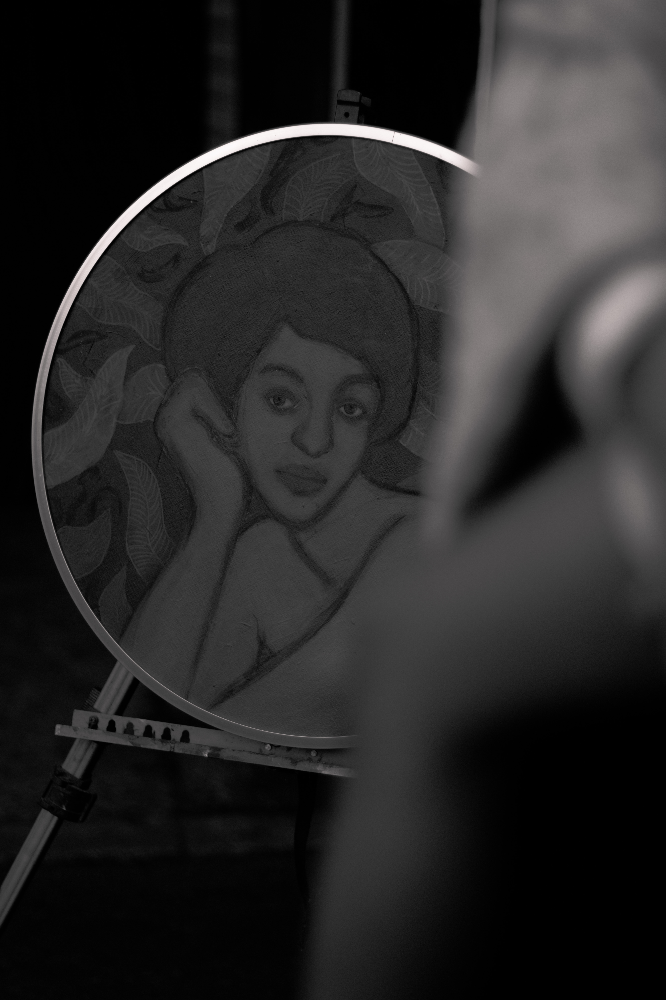
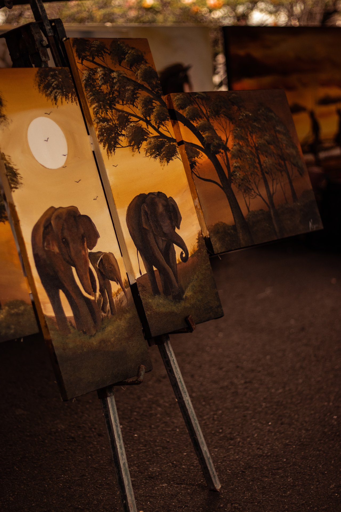
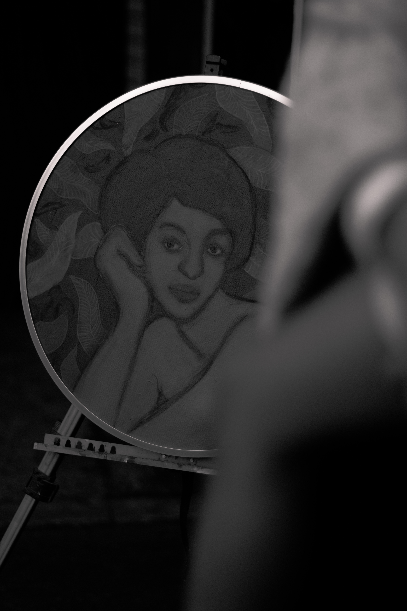

Xanthic Easel is a surf and lifestyle photographer, working both in the water and on land. Based between the Mediterranean coast and Sri Lanka, she collaborates with brands and documents stories of people, places, and the connection between them.